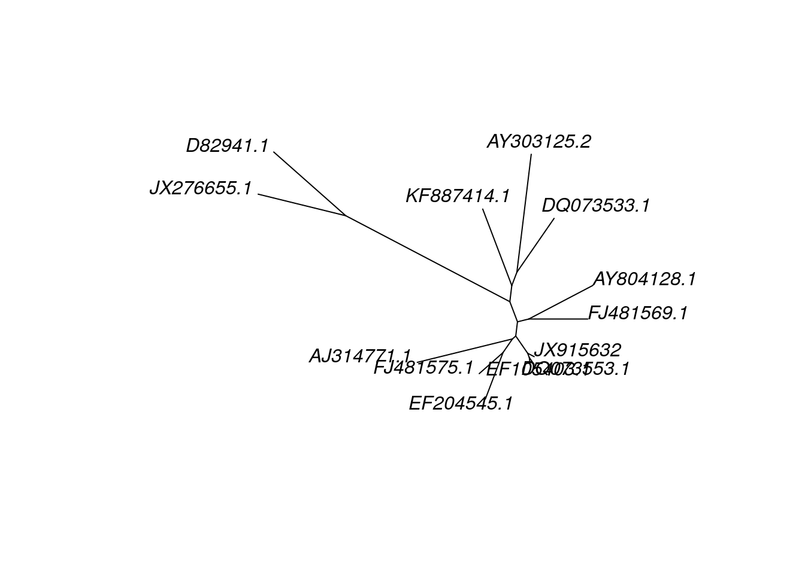

Chapter 13 Building a neighbor joining tree
We are finally ready to start building trees from our data.
For these analyses, we will use an R package called phangorn. If you’d like to learn more about it, you can find the manual here.
phangorn (Phylogenetic Reconstruction and Analysis) is stored in the CRAN repository, so we will use install.packages for the installation.
install.packages('phangorn')
library(phangorn)13.1 The phyDat object
phangorn uses a data structure called phyDat to store information. You can either load the fasta file of your alignment into a phyDat object, or you can directly convert the DNAbin object of your alignment into a phyDat object. You will also want to make sure you have access to your DNAbin object, since we will need that for the model testing.
#Loading a fasta file
grass.phy <- read.phyDat('grass_aligned.fasta', format = 'fasta', type = 'DNA')
#Converting your DNAbin object
grass.align <- read.dna('grass_aligned.fasta', format = 'fasta')
grass.phy <- phyDat(grass.align)
grass.phy## 13 sequences with 3381 character and 1238 different site patterns.
## The states are a c g tThe phyDat object is remarkably similar to the DNAbin object - this isn’t too surprising, since the same team wrote both ape and phangorn.
R BASICS
If you are pausing your R environment on AnVIL (or have not closed an R session), you may still have all the objects you created previously still available. To check this, you can use the list command.
ls()
R will print all the objects that are still stored in the workspace. If you see your aligned DNAbin object (which can also bee seen in the Environment tab in the upper right box of RStudio), you can directly convert it to a phyDat object instead of loading the fasta file first.
13.2 Choosing a substitution model
phangorn can test our data against 24 different substitution models to determine which is the best fit. We first have to create a “guide” tree. (In future releases of phangorn creating this tree won’t be necessary, but for now it doesn’t take much extra time to create a tree.)
dist.matrix <- dist.dna(grass.align)
dist.matrix## JX915632 EF105403.1 DQ073553.1 FJ481575.1 EF204545.1
## EF105403.1 0.018503109
## DQ073553.1 0.018486610 0.009175541
## FJ481575.1 0.053465970 0.059763282 0.062250797
## EF204545.1 0.071054126 0.076242240 0.077482792 0.058401695
## AJ314771.1 0.098387036 0.105024012 0.103575748 0.111726613 0.104200261
## FJ481569.1 0.066921872 0.068194138 0.069428145 0.079685257 0.083719318
## DQ073533.1 0.110258627 0.110258627 0.110174261 0.129491194 0.123022644
## AY804128.1 0.070891254 0.078663432 0.077301449 0.098013117 0.095612138
## AY303125.2 0.134898940 0.140451748 0.140345966 0.156127330 0.155399615
## KF887414.1 0.108883110 0.115798850 0.114317931 0.125235849 0.132797654
## D82941.1 0.229308574 0.234242825 0.230816281 0.245639168 0.252112954
## JX276655.1 0.220197471 0.226712222 0.223309915 0.233015149 0.226285267
## AJ314771.1 FJ481569.1 DQ073533.1 AY804128.1 AY303125.2
## EF105403.1
## DQ073553.1
## FJ481575.1
## EF204545.1
## AJ314771.1
## FJ481569.1 0.116918944
## DQ073533.1 0.157034064 0.105988312
## AY804128.1 0.119801346 0.088583610 0.125139889
## AY303125.2 0.175826848 0.145832849 0.125235849 0.156008381
## KF887414.1 0.147859497 0.107203382 0.121715409 0.133466274 0.139333101
## D82941.1 0.274378224 0.235622139 0.249510345 0.234105767 0.271596554
## JX276655.1 0.254310536 0.229714807 0.252112954 0.233162450 0.258487550
## KF887414.1 D82941.1
## EF105403.1
## DQ073553.1
## FJ481575.1
## EF204545.1
## AJ314771.1
## FJ481569.1
## DQ073533.1
## AY804128.1
## AY303125.2
## KF887414.1
## D82941.1 0.249182286
## JX276655.1 0.254834070 0.110258627str(dist.matrix)## 'dist' num [1:78] 0.0185 0.0185 0.0535 0.0711 0.0984 ...
## - attr(*, "Size")= int 13
## - attr(*, "Labels")= chr [1:13] "JX915632" "EF105403.1" "DQ073553.1" "FJ481575.1" ...
## - attr(*, "Upper")= logi FALSE
## - attr(*, "Diag")= logi FALSE
## - attr(*, "call")= language dist.dna(x = grass.align)
## - attr(*, "method")= chr "K80"The distance matrix stores all the distances in the lower half of the table to save space. This particular matrix used the K80 model (also known as the K2P model) to calculate the distances. When we use the str(dist.matrix) command, we can see the model used stored in the method attribute.
Next, we make a very quick neighbor joining tree to act as the guide tree. We then run the model test command using our phyDat object and the guide tree.
tree.guide <- NJ(dist.matrix)
mod.test <- modelTest(grass.phy, tree = tree.guide)## [1] "JC+I"
## [1] "JC+G"
## [1] "JC+G+I"
## [1] "F81+I"
## [1] "F81+G"
## [1] "F81+G+I"
## [1] "K80+I"
## [1] "K80+G"
## [1] "K80+G+I"
## [1] "HKY+I"
## [1] "HKY+G"
## [1] "HKY+G+I"
## [1] "SYM+I"
## [1] "SYM+G"
## [1] "SYM+G+I"
## [1] "GTR+I"
## [1] "GTR+G"
## [1] "GTR+G+I"As the model test runs, R prints out most of the models being tested. For some reason, R doesn’t print the basic models. The first three models listed are JC + I, JC + G, and JC + G + I. While these models are being tested, the program is also testing the basic JC model.
mod.test## Model df logLik AIC AICw AICc AICcw BIC
## 1 JC 23 -12889.65 25825.30 2.700386e-211 25825.63 3.157131e-211 25966.20
## 2 JC+I 24 -12848.73 25745.47 5.846250e-194 25745.82 6.737694e-194 25892.49
## 3 JC+G 24 -12841.04 25730.08 1.284266e-190 25730.43 1.480093e-190 25877.10
## 4 JC+G+I 25 -12841.04 25732.08 4.724094e-191 25732.46 5.363607e-191 25885.23
## 5 F81 26 -12712.05 25476.11 1.807454e-135 25476.53 2.020447e-135 25635.38
## 6 F81+I 27 -12670.12 25394.24 1.083122e-117 25394.69 1.191340e-117 25559.64
## 7 F81+G 27 -12661.52 25377.04 5.877060e-114 25377.49 6.464260e-114 25542.44
## 8 F81+G+I 28 -12661.52 25379.04 2.161804e-114 25379.53 2.338246e-114 25550.57
## 9 K80 24 -12675.91 25399.82 6.659747e-119 25400.18 7.675234e-119 25546.84
## 10 K80+I 25 -12625.77 25301.54 1.460748e-97 25301.93 1.658493e-97 25454.69
## 11 K80+G 25 -12615.42 25280.84 4.559902e-93 25281.23 5.177187e-93 25433.99
## 12 K80+G+I 26 -12615.42 25282.84 1.677274e-93 25283.26 1.874926e-93 25442.12
## 13 HKY 27 -12490.04 25034.08 1.748144e-39 25034.53 1.922808e-39 25199.48
## 14 HKY+I 28 -12441.45 24938.91 8.118092e-19 24939.39 8.780675e-19 25110.43
## 15 HKY+G 28 -12430.70 24917.40 3.787695e-14 24917.89 4.096840e-14 25088.93
## 16 HKY+G+I 29 -12430.70 24919.40 1.393244e-14 24919.92 1.480992e-14 25097.06
## 17 SYM 28 -12666.82 25389.65 1.076040e-116 25390.13 1.163864e-116 25561.17
## 18 SYM+I 29 -12619.36 25296.72 1.621861e-96 25297.24 1.724008e-96 25474.38
## 19 SYM+G 29 -12609.63 25277.27 2.724038e-92 25277.79 2.895602e-92 25454.92
## 20 SYM+G+I 30 -12609.63 25279.27 1.001914e-92 25279.82 1.046030e-92 25463.04
## 21 GTR 31 -12462.58 24987.15 2.709162e-29 24987.74 2.776339e-29 25177.06
## 22 GTR+I 32 -12406.95 24877.89 1.439643e-05 24878.52 1.447278e-05 25073.92
## 23 GTR+G 32 -12396.11 24856.22 7.310833e-01 24856.85 7.349605e-01 25052.25
## 24 GTR+G+I 33 -12396.11 24858.22 2.689024e-01 24858.89 2.650250e-01 25060.38phangorn calculates multiple statistics that can be used to judge the fit of all the models. Which one you choose depends on what you prefer, although the field standard is generally to use the Akaike Information Criterion. This is a single number that combines how well the model fits the data (as determined by the log likelihood score) with a penalty for increasing model complexity. More complex models will almost always fit the data better, but in small datasets it can be difficult to get good estimates of every parameter when the model is complex. With AIC, we might find the GTR + G + I model fits the best, but we only have enough samples to estimates 2 parameters with any confidence. In this case, the AIC score might tell us to use the K80 (K2P) model.
Smaller numbers are better when it comes to AIC. This is also the case for AICc (which is a “second generation” or updated calculate of AIC) and BIC (the Bayesian Information Criterion, a version of AIC that includes a stronger penalty for additional parameters). In RStudio, you canclick on “mod.test” in the Environment tab from the pane in the upper right corner. That will open the results of our model test analysis in a separate window. If we click on “AIC” or “AICc”, we can order the models by the AIC values. When we do this, we see the lowest AIC and AICc values are for the GTR + G model, which is what we will use going forward.
13.3 Building the neighbor joining tree
We’ve already calculated a distance matrix above, but this time we will specify the model we want to use.
dist.matrix <- dist.dna(grass.align, model = "GTR + G")
tree <- NJ(dist.matrix)
treeBut wait, why are we getting an error message? As it turns out, the modelTest command might test 24 different models, but the dist.dna command can’t use all of those models. This is frustrating but also not uncommon when doing phylogenetic analyses. Unfortunately, not every program supports every substitution model.
dist.dna appears to support the following models: RAW, JC69, K80, F81, K81, F84, T92, TN93, GG95, LOGDET, BH87, PARALIN, N, TS, TV, INDEL, INDELBLOCK. We can check which of these models has the lowest AIC from our earlier model test. Surprisingly, it’s the K80 model, which is what we used initially.
dist.matrix <- dist.dna(grass.align, model = "K80")
tree <- NJ(dist.matrix)13.4 Visualizing the neighbor joining tree
Let’s take a look at the neighbor joining tree.
plot(tree, type = "unrooted")
While we have indeed generated a tree, it’s not really the easiest to interpret at the moment. It’s hard to see what the relationships among taxa are because the tips are labeled with GenBank accession numbers instead of taxa names. Also, we really ought to declare an outgroup.
First let’s change the tip labels. This is simply a matter of replacing each accession number with the taxon name. We do this by creating a vector of taxon names (matching the order of the accession numbers), then replacing the tip.label variable in our tree object. Because most of us are not plant experts, we’ll use the common names for each sample, but it’s also acceptable to use the scientific names.
tree$tip.label## [1] "JX915632" "EF105403.1" "DQ073553.1" "FJ481575.1" "EF204545.1"
## [6] "AJ314771.1" "FJ481569.1" "DQ073533.1" "AY804128.1" "AY303125.2"
## [11] "KF887414.1" "D82941.1" "JX276655.1"new.labels <- c('wheat', 'intermediate wheatgrass', 'mammoth wild rye', 'wheatgrass', 'tall wheatgrass', 'rye', 'Asiatic grass', 'crested wheatgrass', 'Tauschs goatgrass', 'medusahead rye', 'mosquito grass', 'barley_D-hordein', 'Siberian wild rye_D-hordein' )
tree$tip.label <- new.labelsNext, we declare our outgroup (in this case, the two D-hordein samples) and root our tree. (Remember, we did this in our first exercise using R.)
tree.root <- root(tree, outgroup = c('barley_D-hordein','Siberian wild rye_D-hordein'))
plot(tree.root, type = "phylogram", main = 'Neighbor Joining, Glu-1')
Now we have a tree that we can begin to make sense of. To an non-botanist, it seems interesting the samples with the common name “wheatgrass” don’t appear to be clustering together. Common names can be misleading about phylogenetic relationships!
13.5 Saving your trees
You want to be sure to save the rooted tree and model test results to the persistent disk.
write.tree(tree.root, file = 'nj_grass.tre')
write.table(mod.test, file = 'grass_model_test', quote=F, sep='\t')sessionInfo()## R version 4.0.2 (2020-06-22)
## Platform: x86_64-pc-linux-gnu (64-bit)
## Running under: Ubuntu 20.04.3 LTS
##
## Matrix products: default
## BLAS/LAPACK: /usr/lib/x86_64-linux-gnu/openblas-pthread/libopenblasp-r0.3.8.so
##
## locale:
## [1] LC_CTYPE=en_US.UTF-8 LC_NUMERIC=C
## [3] LC_TIME=en_US.UTF-8 LC_COLLATE=en_US.UTF-8
## [5] LC_MONETARY=en_US.UTF-8 LC_MESSAGES=C
## [7] LC_PAPER=en_US.UTF-8 LC_NAME=C
## [9] LC_ADDRESS=C LC_TELEPHONE=C
## [11] LC_MEASUREMENT=en_US.UTF-8 LC_IDENTIFICATION=C
##
## attached base packages:
## [1] stats4 parallel stats graphics grDevices utils datasets
## [8] methods base
##
## other attached packages:
## [1] phangorn_2.5.5 DECIPHER_2.18.1 RSQLite_2.2.1
## [4] Biostrings_2.58.0 XVector_0.30.0 IRanges_2.24.1
## [7] S4Vectors_0.28.1 BiocGenerics_0.36.1 ape_5.4-1
##
## loaded via a namespace (and not attached):
## [1] Rcpp_1.0.8 highr_0.8 pillar_1.4.6 compiler_4.0.2
## [5] jquerylib_0.1.4 tools_4.0.2 zlibbioc_1.36.0 bit_4.0.4
## [9] digest_0.6.25 memoise_1.1.0 evaluate_0.14 lifecycle_1.0.0
## [13] tibble_3.0.3 nlme_3.1-149 lattice_0.20-41 pkgconfig_2.0.3
## [17] rlang_0.4.10 igraph_1.2.6 fastmatch_1.1-0 Matrix_1.2-18
## [21] DBI_1.1.0 yaml_2.2.1 xfun_0.26 stringr_1.4.0
## [25] knitr_1.33 fs_1.5.0 vctrs_0.3.4 hms_0.5.3
## [29] bit64_4.0.5 grid_4.0.2 R6_2.4.1 ottrpal_0.1.2
## [33] rmarkdown_2.10 bookdown_0.24 blob_1.2.1 readr_1.4.0
## [37] magrittr_2.0.2 ellipsis_0.3.1 htmltools_0.5.0 quadprog_1.5-8
## [41] stringi_1.5.3 crayon_1.3.4